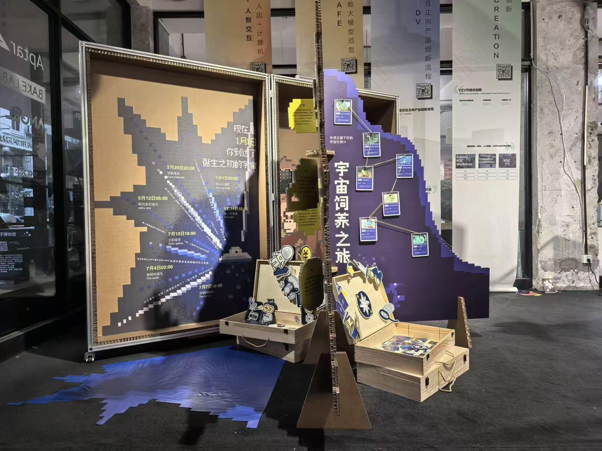

The Travel Log
A suitcase-shaped installation for the “Looking at the Star Box” astronomy pop-up with the Shanghai Astronomy Museum. Visitors log a “cosmic journey,” draw cards and care for digital creatures.
Role and results
- Led a 4-person team: layout, logistics, assembly, interactive modules.
- Three parts: Big Bang to Earth, Earth to life, apes to civilization (photo booth).
- Mini-program with travel logs, comments, card drawing and virtual pets.
- Shown at a public festival, then on level B1 of the Shanghai Astronomy Museum.